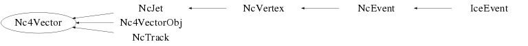

class Nc4Vector
Class Nc4Vector Handling of Lorentz 4-vectors in various reference frames. This class is meant to serve as a base class for all objects that have Lorentz 4-vector characteristics. Error propagation is performed automatically. All 4-vectors are treated in the contravariant form and the convention for the metric and the 4-vector components is according to the one used in the book "Classical Electrodynamics" by J.D. Jackson. A 4-vector is said to have a scalar part and a 3-vector part, which is indicated by the notation x^i = (x^0,x^1,x^2,x^3) The scalar part = x^0 The 3-vector part = (x^1,x^2,x^3) In view of accuracy and the fact that e.g. particle identity (mass) is preserved in many physics processes, the Lorentz invariant (x^i*x_i) is internally saved together with the scalar part. This allows the following two modes of functionality : Scalar mode : The scalar part and the 3-vector part are considered as basic quantities and the invariant with its error is derived from these. Invariant mode : The invariant and the 3-vector part are considered as basic quantities and the scalar with its error is derived from these. The philosophy followed here is the following : 1) Invokation of SetVector() sets the scalar and 3-vector parts and the invariant is calculated from these. Automatically the scalar mode is selected and invokation of SetErrors() will calculate the error on the invariant. 2) In case the scalar part is modified via SetScalar(), scalar mode is automatically selected and the Lorentz invariant (x^i*x_i) and its error are updated accordingly. The 3-vector part is NOT modified. This situation arises when one e.g. precisely determines the time or energy (x^0). 3) In case the Lorentz invariant (x^i*x_i) is modified via SetInvariant(), invariant mode is selected automatically and the scalar part and its error are updated accordingly. The 3-vector part is NOT modified. This situation arises when one e.g. precisely determines the mass. 4) In case the vector part is modified via Set3Vector(), then the current mode determines whether the scalar or the invariant is updated. Scalar mode : The Lorentz invariant (x^i*x_i) and its error are updated; the scalar part and its error are NOT modified. This situation arises when one e.g. improves the 3-position vector for a particle with a very precise timing. Invariant mode : The scalar part and its error are updated; the Lorentz invariant (x^i*x_i) and its error are NOT modified. This situation arises when one e.g. improves the 3-momentum vector for a particle with known mass. The dotproduct is defined such that p.Dot(p) yields the Lorentz invariant scalar of the 4-vector p (i.e. m**2 in case p is a 4-momentum). Note : Vectors (v), Errors (e), reference frames (f) and angular units (u) are specified via SetVector(Float_t* v,TString f,TString u) SetErrors(Float_t* e,TString f,TString u) under the following conventions : f="car" ==> v in Cartesian coordinates (x,y,z) f="sph" ==> v in Spherical coordinates (r,theta,phi) f="cyl" ==> v in Cylindrical coordinates (rho,phi,z) u="rad" ==> angles in radians u="deg" ==> angles in degrees The "f" and "u" facilities only serve as a convenient user interface. Internally the actual storage of the various components is performed in a unique way. This allows setting/retrieval of vector components in a user selected frame/unit convention at any time. Example : Nc4Vector a; Float_t v[4]={25,-1,3,7}; a.SetVector(v,"car"); Float_t vec[4]; a.GetVector(vec,"sph","deg"); Nc4Vector b; Float_t v2[4]={33,6,-18,2}; b.SetVector(v2,"car"); Float_t dotpro=a.Dot(b); Float_t x0=16; Nc3Vector x; Float_t vec2[3]={1,2,3}; x.SetVector(vec2,"car"); Nc4Vector c; c.SetVector(x0,x); c.GetVector(vec,"car"); c.Data("cyl"); c=a+b; c=a-b; c=a*5; --- Author: Nick van Eijndhoven 01-apr-1999 Utrecht University - Modified: NvE $Date: 2011-11-09 11:10:37 +0100 (Wed, 09 Nov 2011) $ NCFS
Function Members (Methods)
public:
| Nc4Vector() | |
| Nc4Vector(const Nc4Vector& v) | |
| virtual | ~Nc4Vector() |
| static TClass* | Class() |
| virtual void | Data(TString f = "car", TString u = "rad") |
| Double_t | Dot(Nc4Vector& q) |
| Nc3Vector | Get3Vector() const |
| Double_t | GetBeta() |
| Nc3Vector | GetBetaVector() const |
| void | GetErrors(Double_t* v, TString f, TString u = "rad") |
| void | GetErrors(Float_t* v, TString f, TString u = "rad") |
| Double_t | GetGamma() |
| Double_t | GetInvariant() |
| virtual Double_t | GetOpeningAngle(Nc4Vector& q, TString u = "rad") |
| virtual Double_t | GetOpeningAngle(Nc3Vector& q, TString u = "rad") |
| Double_t | GetPseudoRapidity() |
| Double_t | GetResultError() const |
| Double_t | GetScalar() |
| Int_t | GetScalarFlag() const |
| NcSignal* | GetUserData() const |
| Nc3Vector | GetVecLong() const |
| void | GetVector(Double_t* v, TString f, TString u = "rad") |
| void | GetVector(Float_t* v, TString f, TString u = "rad") |
| Nc3Vector | GetVecTrans() const |
| Double_t | GetX(Int_t i, TString f, TString u = "rad") |
| Int_t | HasErrors() const |
| Int_t | HasVector() const |
| virtual TClass* | IsA() const |
| virtual void | Load(Nc4Vector& q) |
| Nc4Vector | operator*(Double_t s) |
| Nc4Vector& | operator*=(Double_t s) |
| Nc4Vector | operator+(Nc4Vector& q) |
| Nc4Vector& | operator+=(Nc4Vector& q) |
| Nc4Vector | operator-(Nc4Vector& q) |
| Nc4Vector& | operator-=(Nc4Vector& q) |
| Nc4Vector | operator/(Double_t s) |
| Nc4Vector& | operator/=(Double_t s) |
| Nc4Vector& | operator=(const Nc4Vector& q) |
| void | Set3Vector(Nc3Vector& v) |
| void | Set3Vector(Double_t* v, TString f, TString u = "rad") |
| void | Set3Vector(Float_t* v, TString f, TString u = "rad") |
| void | Set3Vector(Double_t v1, Double_t v2, Double_t v3, TString f, TString u = "rad") |
| void | SetErrors(Double_t* v, TString f, TString u = "rad") |
| void | SetErrors(Float_t* v, TString f, TString u = "rad") |
| void | SetErrors(Double_t e0, Double_t e1, Double_t e2, Double_t e3, TString f, TString u = "rad") |
| void | SetInvariant(Double_t v2, Double_t dv2 = 0) |
| void | SetInvariantError(Double_t dv2) |
| void | SetScalar(Double_t v0, Double_t dv0 = 0) |
| void | SetScalarError(Double_t dv0) |
| void | SetUserData(NcSignal* s) |
| void | SetUserData(NcSignal& s) |
| void | SetVector(Double_t v0, Nc3Vector& v) |
| void | SetVector(Double_t* v, TString f, TString u = "rad") |
| void | SetVector(Float_t* v, TString f, TString u = "rad") |
| void | SetVector(Double_t v0, Double_t v1, Double_t v2, Double_t v3, TString f, TString u = "rad") |
| virtual void | SetZero() |
| virtual void | ShowMembers(TMemberInspector&) |
| virtual void | Streamer(TBuffer&) |
| void | StreamerNVirtual(TBuffer& ClassDef_StreamerNVirtual_b) |
protected:
| Double_t | GetScaLong() |
| Double_t | GetScaTrans() |
Data Members
protected:
| Double32_t | fDresult | ! The error on the scalar result of an operation (e.g. dotproduct) |
| Double32_t | fDv0 | The error on the scalar part |
| Double32_t | fDv2 | The error on the Lorentz invariant |
| Int_t | fScalar | Flag denoting scalar mode |
| NcSignal* | fUser | NcSignal object containing user data |
| Nc3Vector | fV | The 3-vector part |
| Double32_t | fV0 | The scalar part |
| Double32_t | fV2 | The Lorentz invariant (v^i*v_i) |
Class Charts
{kind=link}
{kind=link}
{kind=link}
{kind=link}

Function documentation
Nc4Vector()
Creation of a contravariant 4-vector and initialisation of parameters. All values are initialised to 0. Scalar mode is initially selected.
void SetZero()
(Re)set all attributes to zero. Note : The (de)selection of the scalar mode is not modified.
void SetVector(Double_t v0, Nc3Vector& v)
Store contravariant vector. The error on the scalar part is initialised to 0. The errors on the vector part are taken from the input Nc3Vector. Scalar mode is automatically selected. The error on scalar result operations is reset to 0.
void SetVector(Double_t* v, TString f, TString u = "rad")
Store vector according to reference frame f. Only vector components will be stored, no errors. The string argument "u" allows to choose between different angular units in case e.g. a spherical frame is selected. u = "rad" : angles provided in radians "deg" : angles provided in degrees The default is u="rad". Scalar mode is automatically selected. The error on scalar result operations is reset to 0.
void SetVector(Double_t v0, Double_t v1, Double_t v2, Double_t v3, TString f, TString u = "rad")
Store vector according to reference frame f. Only vector components will be stored, no errors. The string argument "u" allows to choose between different angular units in case e.g. a spherical frame is selected. u = "rad" : angles provided in radians "deg" : angles provided in degrees The default is u="rad". Scalar mode is automatically selected. The error on scalar result operations is reset to 0.
void GetVector(Double_t* v, TString f, TString u = "rad")
Provide 4-vector components according to reference frame f
and according to the current mode.
Scalar mode : The scalar part is directly returned via v[0].
Invariant mode : The scalar part is re-calculated via the value
of the Lorentz invariant and then returned via v[0].
The string argument "u" allows to choose between different angular units
in case e.g. a spherical frame is selected.
u = "rad" : angles provided in radians
"deg" : angles provided in degrees
The default is u="rad".
void SetVector(Float_t* v, TString f, TString u = "rad")
Store vector according to reference frame f. Only vector components will be stored, no errors. The string argument "u" allows to choose between different angular units in case e.g. a spherical frame is selected. u = "rad" : angles provided in radians "deg" : angles provided in degrees The default is u="rad". All errors are initialised to 0. Scalar mode is automatically selected. The error on scalar result operations is reset to 0.
void GetVector(Float_t* v, TString f, TString u = "rad")
Provide 4-vector components according to reference frame f
and according to the current mode.
Scalar mode : The scalar part is directly returned via v[0].
Invariant mode : The scalar part is re-calculated via the value
of the Lorentz invariant and then returned via v[0].
The string argument "u" allows to choose between different angular units
in case e.g. a spherical frame is selected.
u = "rad" : angles provided in radians
"deg" : angles provided in degrees
The default is u="rad".
Double_t GetScalar()
Provide the scalar part. The error on the scalar value is available via GetResultError() after invokation of GetScalar().
Int_t HasVector() const
Check whether the 3-vector components have been set. In case the 3-vector components have been set, the value 1 is returned. Otherwise, the value 0 is returned.
Int_t HasErrors() const
Check whether the errors on the 3-vector components have been set. In case the errors have been set, the value 1 is returned. Otherwise, the value 0 is returned.
Double_t GetResultError() const
Provide the error on the result of an operation yielding a scalar E.g. GetScalar(), GetInvariant() or Dot()
void SetScalar(Double_t v0, Double_t dv0 = 0)
Modify the scalar part (v0) and its error (dv0). The default value for dv0 is 0. The vector part is not modified. Scalar mode is automatically selected ==> Lorentz invariant and its error are updated. The error on scalar result operations is reset to 0.
void SetScalarError(Double_t dv0)
Set the error on the scalar part. If in scalar mode, update error on the invariant accordingly. The error on scalar result operations is reset to 0.
void Set3Vector(Nc3Vector& v)
Set the 3-vector part, the errors are taken from the input Nc3Vector Scalar mode : The scalar part and its error are not modified, the Lorentz invariantand its error are re-calculated. Invariant mode : The Lorentz invariant and its error are not modified, the scalar part and its error are re-calculated. The error on scalar result operations is reset to 0.
void Set3Vector(Double_t* v, TString f, TString u = "rad")
Set the 3-vector part according to reference frame f Only vector components will be stored, no errors. The string argument "u" allows to choose between different angular units in case e.g. a spherical frame is selected. u = "rad" : angles provided in radians "deg" : angles provided in degrees The default is u="rad". Scalar mode : The scalar part and its error are not modified, the Lorentz invariantand its error are re-calculated. Invariant mode : The Lorentz invariant and its error are not modified, the scalar part and its error are re-calculated. The error on scalar result operations is reset to 0.
void Set3Vector(Float_t* v, TString f, TString u = "rad")
Set the 3-vector part according to reference frame f Only vector components will be stored, no errors. The string argument "u" allows to choose between different angular units in case e.g. a spherical frame is selected. u = "rad" : angles provided in radians "deg" : angles provided in degrees The default is u="rad". The Lorentz invariant is not modified The error on scalar result operations is reset to 0.
void Set3Vector(Double_t v1, Double_t v2, Double_t v3, TString f, TString u = "rad")
Set the 3-vector part according to reference frame f Only vector components will be stored, no errors. The string argument "u" allows to choose between different angular units in case e.g. a spherical frame is selected. u = "rad" : angles provided in radians "deg" : angles provided in degrees The default is u="rad". Scalar mode : The scalar part and its error are not modified, the Lorentz invariantand its error are re-calculated. Invariant mode : The Lorentz invariant and its error are not modified, the scalar part and its error are re-calculated. The error on scalar result operations is reset to 0.
void SetInvariant(Double_t v2, Double_t dv2 = 0)
Modify the Lorentz invariant (v2) quantity v^i*v_i and its error (dv2). The default value for the error dv2 is 0. The vector part is not modified. Invariant mode is automatically selected ==> the scalar part and its error are updated. The error on scalar result operations is reset to 0.
void SetInvariantError(Double_t dv2)
Set the error on the Lorentz invariant. If in invariant mode, update error on the scalar part accordingly. The error on scalar result operations is reset to 0.
Double_t GetInvariant()
Provide the Lorentz invariant v^i*v_i. The error on the Lorentz invariant is available via GetResultError() after invokation of GetInvariant().
void SetErrors(Double_t* v, TString f, TString u = "rad")
Store errors for vector v^i according to reference frame f The string argument "u" allows to choose between different angular units in case e.g. a spherical frame is selected. u = "rad" : angles provided in radians "deg" : angles provided in degrees The default is u="rad". If in scalar mode, update error on the invariant accordingly. The error on scalar result operations is reset to 0.
void SetErrors(Double_t e0, Double_t e1, Double_t e2, Double_t e3, TString f, TString u = "rad")
Store errors for vector v^i according to reference frame f The string argument "u" allows to choose between different angular units in case e.g. a spherical frame is selected. u = "rad" : angles provided in radians "deg" : angles provided in degrees The default is u="rad". If in scalar mode, update error on the invariant accordingly. The error on scalar result operations is reset to 0.
void SetErrors(Float_t* v, TString f, TString u = "rad")
Store errors for vector v^i according to reference frame f The string argument "u" allows to choose between different angular units in case e.g. a spherical frame is selected. u = "rad" : angles provided in radians "deg" : angles provided in degrees The default is u="rad". If in scalar mode, update error on the invariant accordingly. The error on scalar result operations is reset to 0.
void GetErrors(Double_t* v, TString f, TString u = "rad")
Provide errors for vector v^i according to reference frame f
and according to the current mode.
Scalar mode : The error on the scalar part is directly returned via e[0].
Invariant mode : The error on the scalar part is re-calculated via the error
value on the Lorentz invariant and then returned via e[0].
The string argument "u" allows to choose between different angular units
in case e.g. a spherical frame is selected.
u = "rad" : angles provided in radians
"deg" : angles provided in degrees
The default is u="rad".
void GetErrors(Float_t* v, TString f, TString u = "rad")
Provide errors for vector v^i according to reference frame f
and according to the current mode.
Scalar mode : The error on the scalar part is directly returned via e[0].
Invariant mode : The error on the scalar part is re-calculated via the error
value on the Lorentz invariant and then returned via e[0].
The string argument "u" allows to choose between different angular units
in case e.g. a spherical frame is selected.
u = "rad" : angles provided in radians
"deg" : angles provided in degrees
The default is u="rad".
void Data(TString f = "car", TString u = "rad")
Print contravariant vector components and errors according to
reference frame f and according to the current mode.
Scalar mode : The scalar part and its error are directly returned.
Invariant mode : The scalar part and its error are re-calculated via the
value (and error) of the Lorentz invariant.
The string argument "u" allows to choose between different angular units
in case e.g. a spherical frame is selected.
u = "rad" : angles provided in radians
"deg" : angles provided in degrees
The defaults are f="car" and u="rad".
Nc4Vector operator+(Nc4Vector& q)
Add 4-vector q to the current 4-vector Error propagation is performed automatically
Nc4Vector operator-(Nc4Vector& q)
Subtract 4-vector q from the current 4-vector Error propagation is performed automatically
Nc4Vector operator*(Double_t s)
Multiply the current 4-vector with a scalar s Error propagation is performed automatically
Nc4Vector operator/(Double_t s)
Divide the current vector by a scalar s Error propagation is performed automatically
Nc4Vector& operator+=(Nc4Vector& q)
Add 4-vector q to the current 4-vector Error propagation is performed automatically
Nc4Vector& operator-=(Nc4Vector& q)
Subtract 4-vector q from the current 4-vector Error propagation is performed automatically
Nc4Vector& operator*=(Double_t s)
Multiply the current 4-vector with a scalar s Error propagation is performed automatically
Nc4Vector& operator/=(Double_t s)
Divide the current vector by a scalar s Error propagation is performed automatically
Nc3Vector GetVecTrans() const
Provide the transverse vector part w.r.t. z-axis. Error propagation is performed automatically
Nc3Vector GetVecLong() const
Provide the longitudinal vector part w.r.t. z-axis. Error propagation is performed automatically
Double_t GetScaTrans()
Provide the "transverse value" of the scalar part w.r.t. z-axis. This provides a basis for e.g. E_trans calculation. Note : the returned value is always positive or zero. The error on the value is available via GetResultError() after invokation of GetScaTrans().
Double_t GetScaLong()
Provide the "longitudinal value" of the scalar part w.r.t. z-axis. This provides a basis for e.g. E_long calculation. Note : the returned value can also be negative. The error on the value is available via GetResultError() after invokation of GetScaLong().
Double_t GetPseudoRapidity()
Provide the pseudorapidity value of the vector part w.r.t. z-axis. The error on the value is available via GetResultError() after invokation of GetPseudoRapidity().
Double_t GetGamma()
Provide the Lorentz gamma factor corresponding to this 4-vector. In case the gamma factor is infinite a value of -1 is returned.
Double_t GetX(Int_t i, TString f, TString u = "rad")
Provide i-th vector component according to reference frame f. The string argument "u" allows to choose between different angular units in case e.g. a spherical frame is selected. u = "rad" : angles provided in radians "deg" : angles provided in degrees The default is u="rad". The vector components are addressed via the generic x0,x1,x2,x3 notation. So, i=0 denotes the scalar component and i=1 denotes the first 3-vector component. The error on the selected component can be obtained via the usual GetResultError() facility.
Double_t GetOpeningAngle(Nc4Vector& q, TString u = "rad")
Provide the opening angle between 3-vector parts with 4-vector q. The string argument "u" allows to choose between different output units. u = "rad" : opening angle provided in radians "deg" : opening angle provided in degrees The default is u="rad".
Double_t GetOpeningAngle(Nc3Vector& q, TString u = "rad")
Provide the opening angle between the 3-vector part and 3-vector q. The string argument "u" allows to choose between different output units. u = "rad" : opening angle provided in radians "deg" : opening angle provided in degrees The default is u="rad".
void SetUserData(NcSignal* s)
Enter the NcSignal object containing the user data. The main goal of these user data is to provide a flexible facility to provide user defined observables to tracks and events, which can in turn be retreived into the produced Tree structure of NcTreeMaker. It is also possible to use the user data to perform a specific sorting or selection of tracks or events. The name of the user defined variable is taken from the NcSignal slotname and the value of the variable is taken from the corresponding signal value. As such it is advised to use only short, single named variable names. Furthermore, the variable name should not contain mathematical symbols like '+', '-' etc... otherwise an analysis via the ROOT TreeViewer gets confused. In case an object to hold user data was already present, this will be deleted first before the new one is stored. This means that SetUserData(0) can be used to just remove the existing object with the user data. Note : The entered NcSignal object is owned by this Nc4Vector instance. As such, a private copy of it will be stored using the Clone() memberfunction.
void SetUserData(NcSignal* s)